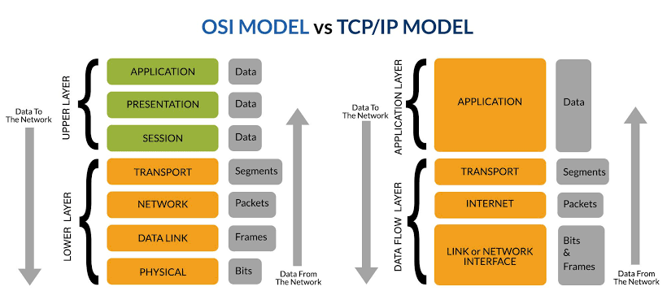

Hackeando las Capas de Internet
Redes y Ciberseguridad desde Cero
Bienvenido a Nexus Cyber Academy
Visualicemos una breve introducción antes de desarmar la infraestructura global.
Parte 1: El Caos de los Años 60 y 70
Antes de crearse las reglas de comunicación global, las computadoras eran terminales aisladas.
- 1969: Nace ARPANET, el primer proyecto descentralizado militar y científico de EE.UU.
- El Gran Choque: Las computadoras corporativas (IBM, Apple, DEC) hablaban infraestructuras incompatibles.
- Incomunicación: Era imposible mover flujos de datos nativos entre marcas competidoras de hardware.
El Pecado Original de Internet
Las bases lógicas de Internet se diseñaron bajo entornos cerrados donde los investigadores confiaban entre sí.
Cero Seguridad Nativa
Al no existir cifrado ni cortafuegos nativos en su origen, los ingenieros recurrieron al Encapsulamiento: un método que segmenta el problema envolviendo los datos dentro de capas sucesivas.
El Mapa del Tesoro: OSI vs. TCP/IP
Marcos de referencia estructurados para ordenar el flujo de información a nivel mundial.
- Modelo OSI (7 Capas): Creado por la ISO. Es el estándar educativo para aislar funciones conceptuales detalladas.
- Modelo TCP/IP (4 Capas): El estándar operativo real que ejecuta el sistema operativo para navegar en la web.
Parte 2: Introducción Visual a la Capa 1
Observemos el siguiente video antes de analizar el hardware de la red.
Parte 2: Capa 1 - Física (Concepto)
Los cimientos de hardware encargados de transportar la información cruda.
- Función: Mover secuencias binarias (bits de 0 y 1) sobre componentes e infraestructura tangible.
- Medios Físicos: Impulsos eléctricos en cables de cobre, destellos de luz en fibra óptica u ondas electromagnéticas (Wi-Fi).
- Componentes: Adaptadores de red (NIC), repetidores, hubs y conectores mecánicos.
Capa 1: Física (Ciberseguridad)
Si un adversario adquiere proximidad manual a tus cables o enrutadores, las barreras de software caen.
Vectores de Intrusión de Capa Física
• Physical Tampering: Conectar interceptores o dispositivos físicos espías ocultos de manera directa en puertos cableados libres.
• Inhibidores (Wi-Fi Jamming): Dispositivos ilegales emisores de ruido de radio para neutralizar sensores inalámbricos y alarmas.
Parte 2: Introducción Visual a la Capa 2
Observemos el siguiente video antes de analizar el direccionamiento físico MAC.
Parte 2: Capa 2 - Enlace de Datos (Concepto)
Organización del direccionamiento local básico e identidades fijas de hardware.
- Función: Encapsula los bits de la Capa 1 en unidades estructuradas llamadas tramas (frames).
- Dirección MAC: Identificador único global de 48 bits quemado de fábrica en cada placa de red.
- Dispositivo Central: El Switch, que aprende qué equipo está en cada puerto según su MAC.
Capa 2: Enlace de Datos (Ciberseguridad)
Las redes locales confían por defecto en las solicitudes de identidad. Los atacantes explotan esta premisa.
Manipulación de Identidades Locales
• MAC Spoofing: Clonar o suplantar la dirección física de un dispositivo autorizado para evadir filtros perimetrales.
• ARP Spoofing: Inundar la red local con mensajes falsos para engañar a los equipos haciéndoles creer que la PC del hacker es la puerta de enlace.
Parte 2: Introducción Visual a la Capa 3
Observemos el siguiente video antes de analizar el direccionamiento lógico global y el enrutamiento IP.
Parte 2: Capa 3 - Red / Internet (Concepto)
El direccionamiento global y la interconexión de múltiples redes independientes geográficamente.
- Función: Direccionamiento lógico y determinación de la ruta óptima para mover paquetes a nivel mundial.
- Dirección IP: Identificadores dinámicos asignados por la red que cambian según tu ubicación geográfica.
- Dispositivo Central: El Router, encargado de conectar el salón con la infraestructura exterior de Internet.
Capa 3: Red / Internet (Ciberseguridad)
A este nivel se orquestan los ataques que buscan impactar la disponibilidad de la infraestructura.
Ataques Globales de Capa de Red
• IP Spoofing: Falsificar las cabeceras de los paquetes para enmascarar la IP real del atacante y evadir listas de bloqueo.
• DDoS (Denegación de Servicio): Inundar un enlace o router con pings masivos automatizados hasta agotar su ancho de banda y colapsar el sistema.
Parte 2: Introducción Visual a la Capa 4
Observemos el siguiente video antes de analizar los puertos lógicos y la diferencia entre TCP y UDP.
Parte 2: Capa 4 - Transporte (Concepto)
Garantía de entrega de mensajes de extremo a extremo y asignación de aplicaciones específicas mediante Puertos.
- Puertos (0 al 65535): Habitaciones digitales que asocian los datos con un programa destino en la PC.
- TCP: Orientado a conexión, seguro y confiable. Utiliza el saludo de 3 vías y reenvía datos perdidos.
- UDP: No orientado a conexión, ultra veloz y ligero. No comprueba errores (streaming, voz IP).
Capa 4: Transporte (Ciberseguridad)
Los atacantes buscan puertas de comunicación desprotegidas en los servicios del sistema operativo.
Vectores de Ataque en Transporte
• Escaneo de Puertos (Port Scanning): Rastreo automatizado sobre los 65,535 puertos para identificar cuáles están escuchando y qué vulnerabilidades exponen.
• SYN Flood: Inundación de saludos de conexión TCP falsos a medias para agotar las tablas de memoria del servidor e inutilizarlo.
Parte 2: Introducción Visual a la Capa 5
Observemos el siguiente video antes de analizar el control de diálogo y la persistencia de las conexiones.
Parte 2: Capa 5 - Sesión (Concepto)
El administrador encargado de la persistencia, control del diálogo y la sincronización entre aplicaciones.
- Función: Establecer, mantener, coordinar y finalizar de manera limpia las conexiones lógicas de comunicación.
- Puntos de Control: Permite reanudar transferencias interrumpidas o parpadeos de red en el mismo punto exacto sin empezar desde cero.
- Ejemplos: Conexiones lógicas a bases de datos distribuidas, NetBIOS y autenticación de terminales remotos.
Capa 5: Sesión (Ciberseguridad)
Si los identificadores de persistencia o los canales abiertos no expiran a tiempo, un intruso se adueñará del control.
Riesgos y Secuestros lógicos
• Session Hijacking (Secuestro de Sesión): Interceptación o robo del identificador único (Token) de sesión del usuario legítimo para operar salteándose contraseñas.
• MitM (Man-in-the-Middle): Intercepción activa durante la negociación inicial del canal de persistencia para clonar credenciales.
Parte 2: Introducción Visual a la Capa 6
Observemos el siguiente video antes de analizar la sintaxis de los datos y el cifrado criptográfico SSL/TLS.
Parte 2: Capa 6 - Presentación (Concepto)
El traductor semántico y protector criptográfico encargado del formato de la información.
- Función: Traduce la sintaxis de la red a formatos legibles. Garantiza que dispositivos Apple o Linux se entiendan entre sí.
- Tareas Base: Compresión de datos para optimizar recursos, conversión de caracteres (ASCII/UTF-8) y **Cifrado de datos**.
- Estándar Esencial: SSL / TLS (los motores criptográficos detrás de las conexiones web seguras).
Capa 6: Presentación (Ciberseguridad)
Omitir el cifrado o utilizar algoritmos criptográficos débiles expone los secretos del sistema directamente en el cable.
Vulnerabilidades Criptográficas
• Tráfico en Texto Plano: Si los datos viajan sin cifrado (HTTP), cualquier interceptor en el Wi-Fi puede capturar contraseñas legibles en el aire.
• SSL Stripping: Ataque que obliga al navegador a degradar su conexión segura HTTPS a una versión HTTP común para poder espiar el flujo.
Parte 2: Introducción Visual a la Capa 7
Observemos el siguiente video antes de analizar los protocolos de software y los servicios expuestos directamente al usuario final.
Parte 2: Capa 7 - Aplicación (Concepto)
La delgada línea de contacto e interfaz directa entre los servicios de comunicación de la red y las personas.
- Función: Suministra servicios lógicos nativos a las aplicaciones y programas instalados por el usuario final.
- Protocolos Famosos:
HTTPS(Navegación),DNS(Resolución de nombres),SMTP(Envío de correos),SSH(Acceso seguro). - Interfaz: Navegadores web, clientes de correo y aplicaciones móviles de mensajería.
Capa 7: Aplicación (Ciberseguridad)
Al ser la capa que interactúa directamente con las personas, es la vía favorita de ataque debido a su vulnerabilidad al factor humano.
Explotaciones a Nivel de Aplicación
• Phishing: Clonación de portales legítimos para confundir al usuario e inducirlo a entregar contraseñas corporativas de forma voluntaria.
• Inyecciones (SQLi / XSS): Explotar campos de entrada desprotegidos en una web para insertar código malicioso y comprometer bases de datos remotas.
Parte 2: Introducción Visual - OSI vs. TCP/IP
Observemos el siguiente video antes de analizar las diferencias críticas y equivalencias entre ambos modelos.
Parte 2: Mapeo Arquitectónico Estructural

¿Cómo se compactan las estructuras?
- Simplificación de Software: TCP/IP absorbe la gestión humana, traducción y tokens en una gran capa unificada.
- Preservación del Núcleo: Las funciones críticas de direccionamiento IP y puertos lógicos se mantienen intactas en ambos mundos.
- Consolidación del Medio: Los cables, ondas de radio y direcciones MAC se unifican para una operación directa en hardware.
💡 Nota del Analista: Reducir de 7 a 4 niveles disminuye el procesamiento del sistema operativo y acelera la transmisión de paquetes en redes de alta velocidad.
OSI vs. TCP/IP: La Batalla del Diseño
Dos filosofías e ingenierías distintas creadas para resolver la conectividad informática del planeta.
Modelo OSI (Teoría)
• Diseñado por la ISO como un marco educativo universal.
• Estructura rígida dividida de forma estricta en 7 capas detalladas.
Modelo TCP/IP (Práctica)
• Diseñado por el DoD de EE.UU. para optimizar el Internet del mundo real.
• Estructura compacta integrada en solo 4 capas operativas.
La Equivalencia en el Internet Real
¿Cómo se traducen las 7 capas teóricas a las 4 capas que corren en tu software actual?
[OSI 7, 6, 5] Aplicación, Presentación, Sesión 🡒 [TCP/IP 4] APLICACIÓN (HTTPS, DNS)
[OSI 4] Transporte (TCP/UDP) 🡒 [TCP/IP 3] TRANSPORTE (Puertos)
[OSI 3] Red (Enrutamiento) 🡒 [TCP/IP 2] INTERNET (Direcciones IP)
[OSI 2, 1] Enlace, Física 🡒 [TCP/IP 1] ACCESO A LA RED (MAC, Cables)
💡 Analogía de Ciberseguridad: El modelo OSI es el plano arquitectónico en papel; el modelo TCP/IP es el edificio ya construido. Usamos OSI para designar el problema teórico, pero configuramos las defensas perimetrales reales sobre TCP/IP.
Parte 3: ¡Manos a la Terminal!
Uso de herramientas de diagnóstico y auditoría nativas en tu propio sistema operativo.
Acceso Rápido al Símbolo del Sistema:
• Windows: Presiona la tecla Inicio, escribe cmd y dale Enter.
• Mac / Linux: Abre tu buscador de aplicaciones, localiza Terminal y ejecútala.
Ejercicio 1: Tu Identidad Física y Lógica
Identificación de direccionamiento en interfaces activas de red (Capa 2 y Capa 3).
# Comando en Windows (Símbolo del Sistema):
ipconfig /all
# Comando en Mac / Linux (Terminal):
ifconfig o ip a
Misión: Localiza en la salida de texto tu Dirección Física / MAC (Capa 2) y tu Dirección IPv4 actual (Capa 3).
Ejercicio 2: Auditoría de Puertos Activos
Descubrir conexiones de red establecidas por aplicaciones en segundo plano (Capa 4).
# Símbolo del sistema (Windows):
netstat -ano
# Consola Unix (Mac / Linux):
netstat -tun o ss -tulpn
Tip Técnico: Las líneas marcadas con el estado ESTABLISHED representan transmisiones activas con servidores externos en este preciso instante.
Ejercicio 3: Interrogación DNS
Resolución de nombres lógicos a direcciones binarias entendidas por los routers (Capa 7).
# Comando universal multiplataforma:
nslookup wikipedia.org
Misión: Descubrir la dirección IPv4 pública real que responde tras el nombre legible de la enciclopedia antes de que pase al router.
Parte 4: Demostración de Ataques en Vivo
Análisis y observación del tráfico de red local desde la perspectiva de una intrusión cibernética.
- Fase 1 (Mapeo): Escaneo automatizado de puertos TCP para encontrar ventanas de software desprotegidas.
- Fase 2 (Explotación): Interceptación en texto plano de datos confidenciales sobre protocolos sin cifrado de Capa 6 (HTTP).
Parte 5: Desafío Capture The Flag (CTF)
Reglas del Juego
• Organícense en escuadrones tácticos de 3 o 4 integrantes en el salón.
• Analicen las pistas distribuidas físicamente en su Ficha de Respuestas.
• Ejecuten comandos en sus terminales para encontrar los códigos ocultos con el formato exacto FLAG{...}.
Parte 5: Monitoreo Visual - IPv4 vs. IPv6
Analicemos el impacto del agotamiento global de direcciones IP en tiempo real antes de desglosar las defensas.
Métrica de Agotamiento (IPv4)
Evolución Arquitectónica hacia IPv6
IPv4 vs. IPv6: La Crisis de Identidad de Internet
IPv4 (32 Bits / Decimal)
• Estructura: 4 octetos separados por puntos (Ej: 192.168.10.45).
• Espacio: 232 = 4.300 millones de combinaciones posibles en total.
• Estado: Totalmente agotadas debido a la proliferación de móviles e IoT.
IPv6 (128 Bits / Hexadecimal)
• Estructura: 8 grupos separados por dos puntos (Ej: 2001:db8::1).
• Espacio: 2128 = 340 sextillones de combinaciones únicas.
• Estado: Inventario masivo perenne para cada dispositivo del planeta.
El Cambio de Paradigma en Ciberseguridad
Laboratorio de Inspección: Anatomía de tu IPv6
Auditoría rápida de prefijos en la consola para medir el alcance lógico de la máquina frente a amenazas externas.
# Comando de diagnóstico en tu terminal:
Windows: ipconfig /all || Mac/Linux: ip -6 addr show
• Prefijo fe80:: (Link-Local): Dirección interna automática. Sirve solo para comunicarse en el salón; un atacante externo no puede alcanzarla directamente de forma pública.
• Prefijo 2001:: / 2002:: (Global Unicast): Tu máquina tiene visibilidad pública y directa en Internet. Requiere inspección perimetral perenne y firewall activo.
Parte 5: Desafío Flash - El Descifrador Criptográfico
IP del Atacante detectada en los logs:
2001:0db8:0000:0000:0000:0000:0000:0001
¿Cuál es la firma comprimida correcta que debes aplicar en la regla del Firewall perimetral?
Parte 6: Las 3 Reglas de Oro
Principios fundamentales de defensa activa para implementar en tu entorno diario y corporativo.
- La Seguridad es Multicapa: Un cortafuegos robusto en la red no puede contener ataques de Phishing o ingeniería social originados directamente en la Capa 7 de Aplicación.
- Cifrado Mandatorio: Evita bajo cualquier circunstancia introducir credenciales o tokens de acceso en sitios web que carezcan de candado criptográfico HTTPS activo (Capa 6).
- Auditoría de Host Periódica: Tu computadora es tu fortaleza digital. Utiliza herramientas de diagnóstico nativas (como
netstat) para identificar anomalías o conexiones ocultas de malware.
¡Muchas gracias por participar!
Resumen del Bootcamp Táctico
Un último repaso visual de las defensas y vulnerabilidades analizadas hoy.